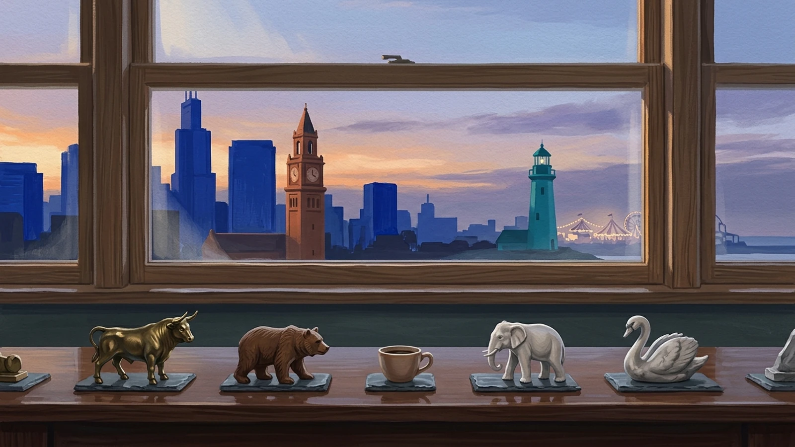
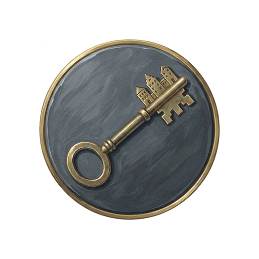

Versión de prueba · gratis y sin anuncios

Dueños de la CiudadCompra calles, invierte en la Bolsa de los barrios y llega el primero a la meta.
- La laptop o tablet es el tablero (mejor si la conectas a la tele): muestra la ciudad, mueve las fichas, tira los dados y hace de banco.
- Tu celular es tu cartera: tu dinero, tus calles y tus acciones, y los botones para tirar, comprar, pujar, construir y negociar.
- Mercado vivo: cada barrio cotiza en la Bolsa, y su precio sube cuando alguien construye en él.
- Sin instalar nada: abre el tablero, pulsa «Jugar con celulares» y que cada jugador escanee el QR. Funciona por internet o en la wifi de casa.